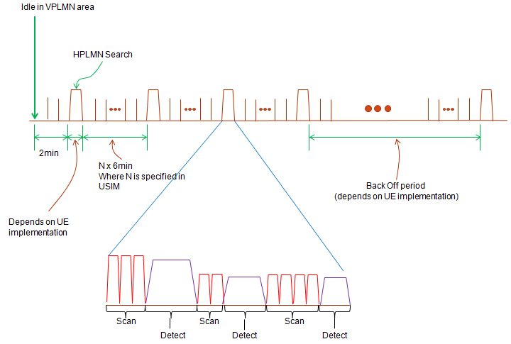
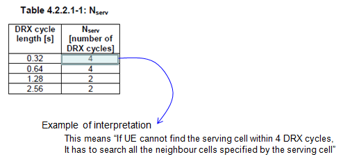

基本流程之九：小区搜索
1 小区搜索（测量，评估，检测）
小区搜索包括一系列测量过程，评估和检测。这个过程和小区选择紧密相连，UE进行小区搜索之后，就要进行小区选择。
小区搜索的过程对UE的能耗也有很大的影响。
2 基本的术语
- DRX周期：这是个计时器。测试/评估/检验 （measurement/evaluate/detect）过程在一个特定的时间段内置型，这些时间段位于一些DRX内部。在空闲模式，DRX周期由网络通过SIB1告知。
- 扫描：这个过程，UE调整射频到某个频点，测量信号质量（RSSI）。通常，在measurement，evaluation之前，UE会扫描并选择一些候选的频点以备急需measurement和evaluation。如果UE直接进入measurement和evaluation阶段，扫描所有的频点，太花时间和精力（能量）
- 测量（measurement）：这个过程测量RSRP，RSRQ。
- 评估（evaluate）：这个过程会根据measurement结果确定小区选择标准。
- 检测（detect）：在这个过程中UE针对某个频点上的信号，执行通过过程，译码基本的小区信息
3 一个例子
接下来给一个WCDMA的例子，阐述scan，measurement, evaluate, detect和select过程，LTE中的逻辑也大致相似。当你第一次给UE上电，或者说UE走出了服务区并尝试搜素新的小区时，UE不知道哪一个频点可以使用。所以，UE会进行一些盲搜索步骤。 例如，假设你的UE支持WCDMA带宽，那么UE周围的NodeB可能使用10562到10838之间的任何一个频道，可能有276个可能的频点。那么你的UE怎么才能决定自己使用哪一个频点呢？
答案是：有很多种方法，并且这些方法并没有在3GPP中定义。 所以这些方法都是UE的制造商们实现的。其中一个可能的实现方案是：
- UE调整射频到每一个它支持的频道上，测量RSSI。（RSSI测量任何可以检测到的能量，这个测量不需要任何信道编码过程。因此在这一步，UE不知道任何关于网络的信息。在这一步，UE也不尝试译码PCPICH（WCDMA）。在LTE系统中也不会译码同步和参考信号，更不会检测物理小区ID，RSSI仅仅检测每个信道上的功率） 。 当UE为每一个信道执行RSSI时，它创建一个列表，为每一个列举每一个信道的能量。
- 然后UE根据第一步得到的列表，找出RSSI能量大于门限的的信道。这个门限值也是由每个芯片厂商自己定的。然后就会有人问：UE是不是可以在所有RSSI大于给定门限的信道上发送数据？答案是，没必要。
- UE解码PCPICH然后检测能量，并获得小区ID（UE在某些信道上成功获得小区ID，在另一些信道上失败）。
- 根据第三部的列表，UE译码每一个候选信道的MIB信息。这一步结束之后，UE会有生成一个列表，存放频率，小区ID（在WCDMA中是PSC）和PLMN。
- 基于USIM的信息以及第四步得到的列表，UE决定哪一个小区是真正的候选小区，并试着译码系统信息，进而开始注册过程。

如果没能找到任何的PLMN，UE将寄宿VPLMN小区。但是一旦UE在VPLMN小区内进入idle模式，UE将搜索HPLMN中的小区。这个过程将包含以上所述的所有步骤（不同的UE实现可能会有所出入）。
通常，这些HPLMN搜索过程是周期进行的（如下图所示）。HPLMN的搜索由USIM的参数决定，但是具体的搜索算法由UE实现完成。退避周期并没有在3GPP中详细规定。如果UE在没有HPLMN的区域内周期搜索，会很浪费能量。因此，为了节省能量，大多数UE生产商都会执行一种退避策略。

4 什么时候才执行这些过程？
通常，在以下几个场景中UE才执行小区搜索过程：
- UE上电时
- 处于Idle模式的UE试图在每一个DRX找到服务小区
- 如果UE在几次尝试之后没有找到服务的小区，它会尝试开始相邻小区搜索。
- 当UE限制服务（SOS/Energency Call only）。 UE周期的搜索一个合适的小区提供这些服务。也就是说，即使你停机之后，UE仍然会周期的搜寻小区，以便能够提供紧急服务。
- 当UE处于OOC状态（our of coverage）：UE应该重新扫描可能存在的小区，检查UE是否可以重新获得服务。
- 当UE处于漫游状态（UE现在正连接在VPLMN小区），UE应该周期的搜索HPLMN小区。周期是6N分钟，N在USIM的HPPLMN域制定。
5 服务小区测量和评估
在每一个DRX周期内，UE测量每个小区的质量，检测其是否满足选择标准。如果UE成功的找到一个满足条件的小区，它会呆在小区内，但是如果它在一定次数的尝试后没有找到满足条件的小区，它需要为所有相邻的小区发起测量，评估过程。蜂窝服务信息指定相邻小区都有哪些（参照36.133的第4.2.2.1节）
